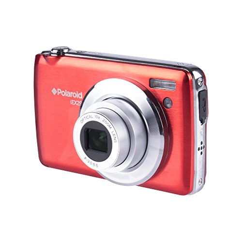

I lettori hanno una possibilità di acquistare il CD − ROM
contenente le schede del Corso base di tecnica di fotografia o dei
vari corsi monotematici.Oltre ai corsi presenti in rete al momento
dell'ordine, il CD−ROM contiene l'intero sito
ABC−Fotografia.Ulteriori informazioni
Corso base di tecninca fotografica.Oltre 100 schede illustrano con
chiarezza i concetti e le tecniche che stanno alla base della
fotografia. Gli argomenti possono essere consultati in modo
Corso base:
sequenziale; questo sistema è consigliato a coloro che sono alle
prime armi. Ogni scheda prevede collegamenti ad argomenti correlati,
per una consultazione tematica. La comprensione è facilitata da
schemi, grafici, tabelle e fotografie apposite, per addentrarsi nel
migliore dei modi nel meraviglioso mondo della fotografia
creativa.
